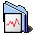
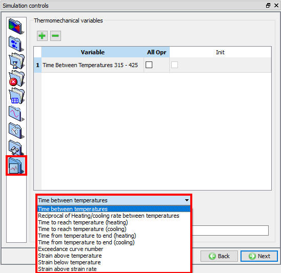

Using Thermomechanical variables ( Fig. 9.9.1.) option user can calculate the time contours, heating or cooling rate. User can also define multiple sets of time-temperature variables.
Following are list of variables:

Thermomechanical variables window
Related Topics:
9.1. Simulation type Settings
9.2. Defining Step
9.3. Stopping Controls
9.4. Remesh Criteria
9.5. Solver Settings
9.6. Process Conditions
9.7. Advanced Options
9.8. Control Files